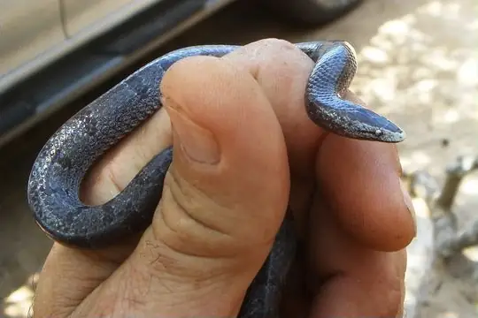
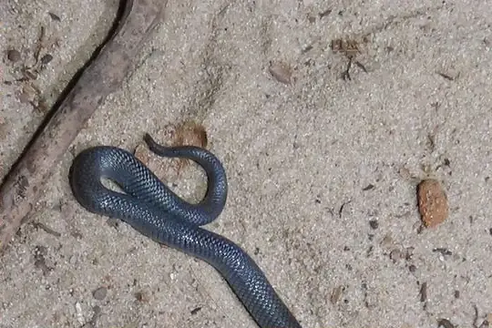

Lycophidion
The genus Lycophidion (family Lamprophiidae) has 23 species in SnakeList (none venomous), recorded in 42 countries.
- 23species
- 23non-venomous
- 42countries
About the genus
A genus of the family Lamprophiidae (lamprophiids).
Species
Showing 23 species
- No photo yetBlotched Wolf SnakeLycophidion nigromaculatum
 Cape Wolf Snake (capense)Lycophidion capense
Cape Wolf Snake (capense)Lycophidion capense Cape Wolf Snake (multimaculatum)Lycophidion multimaculatum
Cape Wolf Snake (multimaculatum)Lycophidion multimaculatum- No photo yetChad Wolf SnakeLycophidion tchadensis
- No photo yetChirio’s Wolf SnakeLycophidion chirioi
 Dwarf Wolf SnakeLycophidion nanum
Dwarf Wolf SnakeLycophidion nanum
Eastern Wolf SnakeLycophidion semiannule Flat Wolf SnakeLycophidion laterale
Flat Wolf SnakeLycophidion laterale Flat-snouted Wolf SnakeLycophidion depressirostre
Flat-snouted Wolf SnakeLycophidion depressirostre- No photo yetHellmich's Wolf SnakeLycophidion hellmichi
- No photo yetMozambique Wolf SnakeLycophidion acutirostre
 Namibian Wolf SnakeLycophidion namibianum
Namibian Wolf SnakeLycophidion namibianum Ornate Wolf SnakeLycophidion ornatum
Ornate Wolf SnakeLycophidion ornatum Pale Wolf SnakeLycophidion irroratum
Pale Wolf SnakeLycophidion irroratum Pemba Wolf SnakeLycophidion pembanum
Pemba Wolf SnakeLycophidion pembanum
Pygmy Wolf SnakeLycophidion pygmaeum Red-snouted Wolf SnakeLycophidion uzungwense
Red-snouted Wolf SnakeLycophidion uzungwense Speckled Wolf SnakeLycophidion meleagre
Speckled Wolf SnakeLycophidion meleagre Spotted Wolf SnakeLycophidion albomaculatum
Spotted Wolf SnakeLycophidion albomaculatum Taylor's Wolf SnakeLycophidion taylori
Taylor's Wolf SnakeLycophidion taylori Variegated Wolf SnakeLycophidion variegatum
Variegated Wolf SnakeLycophidion variegatum Western Jackson’s Wolf SnakeLycophidion jacksoni
Western Jackson’s Wolf SnakeLycophidion jacksoni Lycophidion semicinctum
Lycophidion semicinctum
No snakes in Lycophidion match.
About the genus Lycophidion
- Family: Lamprophiidae.
- Recorded in: Angola, Benin, Botswana, Burkina Faso, Burundi, Cameroon, Central African Republic, Chad, Democratic Republic of the Congo, Egypt, Equatorial Guinea, Eritrea, Eswatini, Ethiopia, Gabon, Gambia, Ghana, Guinea, Guinea-Bissau, Ivory Coast, Kenya, Lesotho, Liberia, Malawi, Mali, Mozambique, Namibia, Niger, Nigeria, Republic of the Congo, Rwanda, Senegal, Sierra Leone, Somalia, South Africa, South Sudan, Sudan, Tanzania, Togo, Uganda. and 2 more